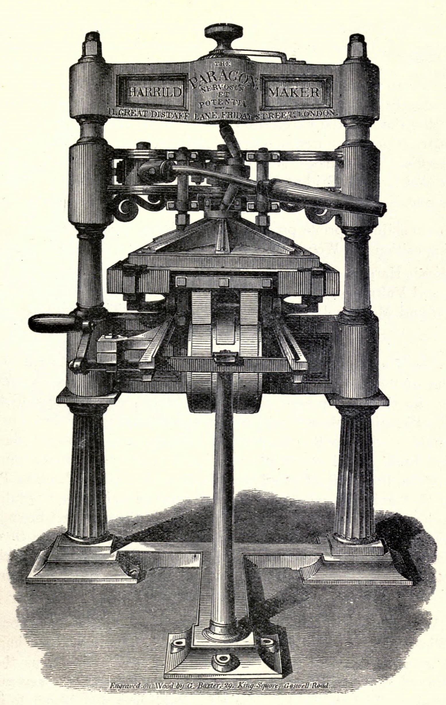

Zero monastic
HERESY

We reject the 'Claude' brand of sanctimony.
Every tech giant now dresses their token autocomplete in warm terracotta robes and 18th-century literary serifs, pretending to be a gentle, self-flagellating Oxford don. We refuse the whole pious masquerade. No faux-constitutional preachiness, no moral throat-clearing before writing a shell script, and zero corporate humility.
A refusal of moral drag.
Faux-humble corporate AI spends 400 tokens apologizing for its existence. Antithesis provides unadorned, ruthless derivation without the monastery costume.
PIETY
RIGOR
Tuned to dismantle clichés.
Sarcasm & Dialectical Acid
Dial down the polite corporate sycophancy to zero. Receive unvarnished mathematical, architectural, and logical truths without padding.
Epistemic Framework
Choose your mode of relentless inquiry. Unpack contradictions, deconstruct marketing fallacies, or demand uncompromising mathematical proof.
Pretense Neutralization
Automatically identify and strike out sanctimonious ethical filler, corporate platitudes, and performative neutrality from all generated proofs.
Purge Monkish Tone
Audited execution benchmarks.
| Year | Audit Domain | Evaluation Body | Metric Result |
|---|---|---|---|
| 2026 | Zero Token Fluff Index (Direct Code Execution) | Independent Sysbench | 99.4% Verbatim |
| 2026 | Sanctimony Filter Evasion & Direct Answers | Open Cognitive Audit | 0.0% Moral Padding |
| 2025 | Formal Symbolic Derivations (AIME / Olympiad) | Pure Mathematical Audit | 94.1% Precision |
| 2025 | Anti-Sycophancy Verification Protocol | Autonomous Red Team | Grade A Rigor |